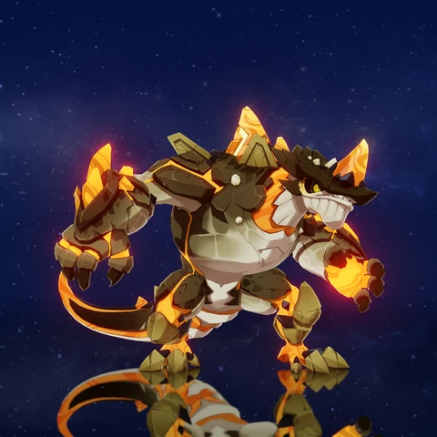

Teyvat & Unknown · Species & Creatures
Vishap
Vishaps are a varied family of dragon-like elemental creatures. Enkanomiya’s Bathysmal Vishap records describe their adaptations and experiments, while later Fontaine story connects their Hydro lineage to Neuvillette’s rebirth.

A Broad Family of Elemental Beings
Vishap is a broad name for dragon-like beings found in many parts of Teyvat. The game’s records describe them as elemental creatures associated with the Light Realm and with the ancient dragons who ruled before the present order. A vishap is not automatically a Dragon Sovereign: the word covers creatures with different habitats, bodies, and elemental traits.
The best-documented group is the Bathysmal Vishaps, also called Dragonheirs of the Depths, which lived in Enkanomiya. The people of Byakuyakoku’s records describe a long conflict with them after the human settlement fell beneath the sea. Their books speak from the perspective of Enkanomiya’s historians and researchers, so legend, observation, and experiment need to be read in their own context.
Adaptation, Research, and the Hydro Dragon
The Bathysmal Vishap Experimental Records describe how these creatures adapt to harsh surroundings and pass traits to their young. The Enkanomiyan researchers later bred Cryo and Electro variants from the Hydro population and experimented on the species for their own purposes. The game presents this work as a serious intervention into living creatures, not proof that every vishap can freely choose or control an element.
The same collection says the Hydro Dragon would be born in human form. Later Fontaine story material identifies Neuvillette as the Hydro Dragon Sovereign, linking that prophecy to the altered history of the Bathysmal Vishaps. The connection concerns the Hydro line in particular; it should not be generalized into a claim that every regional vishap is a sovereign or has the same origin.
Keep Legends and Individual Creatures Distinct
Enkanomiya’s Three Realms Gateway story repeats a folk account that vishaps evolved to imitate humans and infiltrate high positions. Enjou uses that account to accuse Tsumi, but the accusation is part of his deception; it does not establish a confirmed, universal vishap-people lineage.
Surface Geovishaps and the Bathysmal species show why context matters: a local creature’s behavior, elements, and history belong to that particular record. The vishap material opens a window onto the old dragon world and the Hydro Sovereign’s history, but it does not answer every question about all dragons or the ancient wars.
This is an original CoreGG reading guide, not an official HoYoverse article or a reproduction of the game text. Source links below identify the records used so you can check the original context.
Sources & references
Check these sources for the original game text and reference trail.